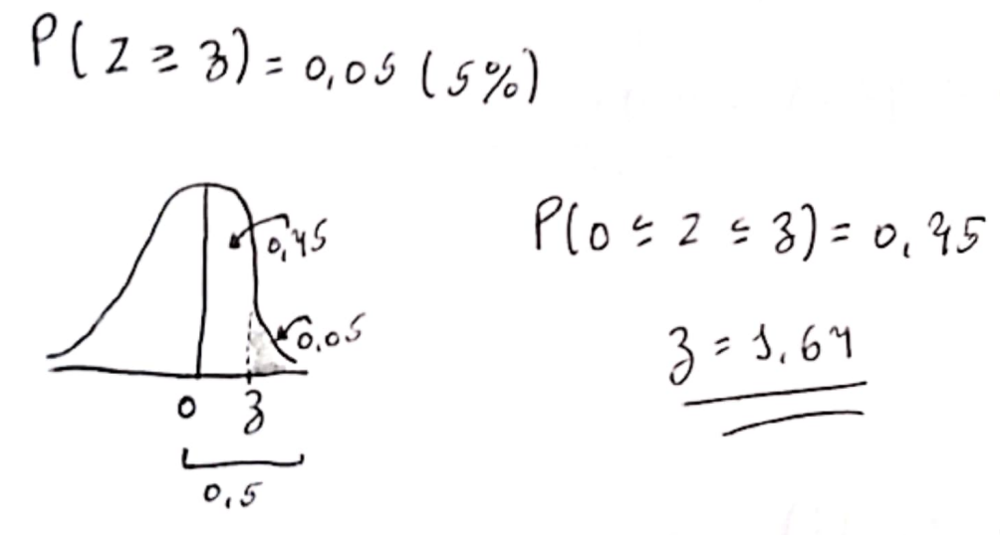
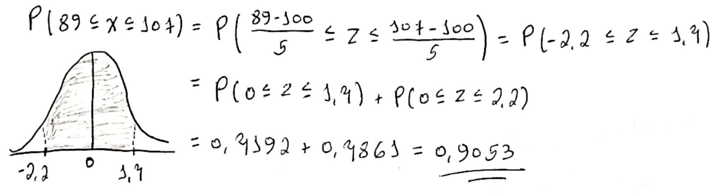
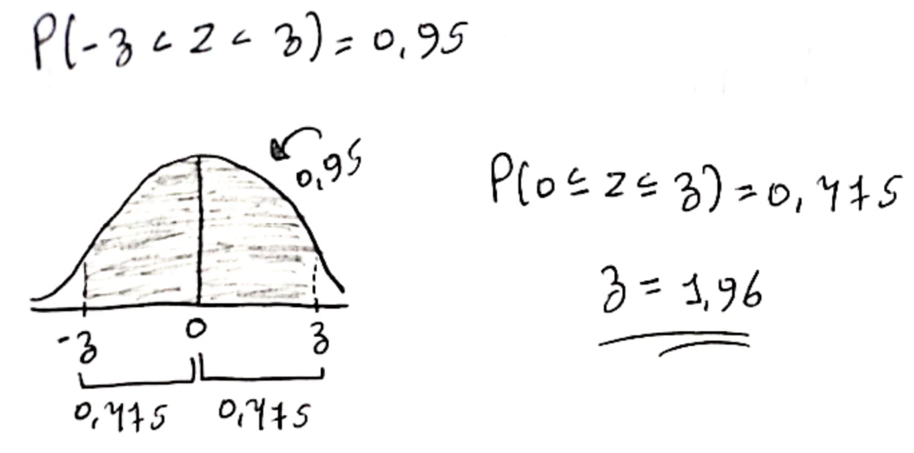

# P(Z < 1,64)
pnorm(1.64)[1] 0.9494974# P(Z < 1,64)
pnorm(1.64)[1] 0.9494974As probabilidades de variáveis aleatórias contínuas \((X)\) são definidas como a área sob a curva da sua distribuição. Assim, apenas as faixas de valores podem ter uma probabilidade diferente de zero. A probabilidade de que uma variável aleatória contínua seja igual a algum valor é sempre zero. Sendo assim, \(P(Z = 1,64) = 0\)
# P(Z ≤ 1,64)
pnorm(1.64)[1] 0.9494974# P(Z < -1,64)
pnorm(-1.64)[1] 0.05050258# P(−1, 64 < Z < 1, 64) = P(Z < 1,64) - P(Z < -1,64)
pnorm(1.64) - pnorm(-1.64)[1] 0.8989948# P(Z > 1,64) = 1 - P(Z < 1,64)
1 - pnorm(1.64)[1] 0.05050258# P(Z < z) = 0,05 (5%)
qnorm(0.05)[1] -1.644854
# P(Z ≥ z) = 0,05 (5%)
qnorm(1 - 0.05)[1] 1.644854# X ∼ N(100; 25)
# Parâmetros
mean = 100 # Média
vari = 25 # Variância
sd = sqrt(vari) # Desvio Padrão# P(X ≥ 108)
1 - pnorm(108, mean, sd)[1] 0.05479929As probabilidades de variáveis aleatórias contínuas \((X)\) são definidas como a área sob a curva da sua distribuição. Assim, apenas as faixas de valores podem ter uma probabilidade diferente de zero. A probabilidade de que uma variável aleatória contínua seja igual a algum valor é sempre zero. Sendo assim, \(P(Z = 100) = 0\)

# P(89 ≤ X ≤ 107) = P(X ≤ 107) - P(X ≤ 89)
pnorm(107, mean, sd) - pnorm(89, mean, sd)[1] 0.9053399# P(12 < X − µ < 16) = P(X < 12/sd) - P(X < 16/sd)
pnorm(16/sd) - pnorm(12/sd) [1] 0.007510398# P(112 < X < 116) = P(116) - P(112)
pnorm(116, mean, sd) - pnorm(112, mean, sd) [1] 0.007510398# P(X < 100 ou X > 106) = P(X < 100) + P(x > 106)
pnorm(100, mean, sd) + (1 - pnorm(106, mean, sd))[1] 0.6150697# P(X < x) = 0.05;
qnorm(0.05, mean, sd)[1] 91.77573# P(X > x) = 0.05
qnorm(1 - 0.05, mean, sd)[1] 108.2243# P(X > x) = 0.975
qnorm(1 - 0.975, mean, sd)[1] 90.20018# X ∼ N(100; 25)
# Parâmetros
mean = 2.9 # Média
vari = 1.96 # Variância
sd = sqrt(vari) # Desvio Padrão# P(X < 1)
pnorm(1, mean, sd)[1] 0.08736791# P(X ≥ 4)
1 - pnorm(4, mean, sd)[1] 0.2160174# P(X ≥ 2)
1 - pnorm(2, mean, sd)[1] 0.7398416# P(2.5 < X < 4) = P(X < 4) - P(X < 2.5)
pnorm(4, mean, sd) - pnorm(2.5, mean, sd)[1] 0.3964341Questão não apresenta um enunciado válido e lógico.
Questão não apresenta um enunciado válido e lógico.
# P(X ≥ x) = 0.05;
qnorm(1 - 0.05, mean, sd)[1] 5.202795Para qualquer distribuição normal, a área sob a curva (probabilidade) do intervalo \(\left (\mu - k\sigma; \ \mu + k\sigma \right)\) com \(k \in \mathbb{R}\) e quaisquer valores de \(\mu\) e \(\sigma\) é igual a:
\(P(\mu − k\sigma \leqslant X \leqslant \mu + k\sigma)\)
sabendo que \(Z =\frac{X - \mu}{\sigma}\) podemos normalizar \(X\) da seguinte forma:
\[P\left (\mu − k\sigma \leqslant X \leqslant \mu + k\sigma \right) =\]
\[P\left (\frac{\mu − kσ - \mu}{\sigma} \leqslant \frac{X-\mu}{\sigma} \leqslant \frac{\mu + k\sigma - \mu}{\sigma} \right) = \]
\[P\left (\frac{{\color{Red} \not{\mu}} − k{\color{Green} \not{\sigma}} - {\color{Red} \not{\mu}}}{{\color{Green} \not{\sigma}}} \leqslant Z \leqslant \frac{{\color{Red} \not{\mu}} + k\color{Green} \not{\sigma} - {\color{Red} \not{\mu}}}{\color{Green} \not{\sigma}} \right) = \]
\[P\left (-k \leqslant Z \leqslant k \right)\]
Com isso, podemos concluir que para qualquer distribuição normal a área sob a curva (probabilidade) do intervalo \(\left (\mu - k\sigma; \ \mu + k\sigma \right)\) com \(k \in \mathbb{R}\) sempre será a probabilidade do intervalo \(\left ( -k; \ k \right)\) não importando os valores de \(\mu\) e \(\sigma\)
Levando em conta a [OBS_01] e \(k = 1,64\) sabemos que \(\left (\mu - 1,64\sigma; \ \mu + 1,64\sigma \right) = (-1,64; 1,64)\)
Com isso, podemos calcular:
\(P(-1,64 \leqslant Z \leqslant 1,64)\)
pnorm(1.64) - pnorm(-1.64)[1] 0.8989948Gráfico:
Levando em conta a [OBS_01] e \(k = 1,96\) sabemos que \(\left (\mu - 1,96\sigma; \ \mu + 1,96\sigma \right) = (-1,96; 1,96)\)
Com isso, podemos calcular:
\(P(-1,96 \leqslant Z \leqslant 1,96)\)
pnorm(1.96) - pnorm(-1.96)[1] 0.9500042Gráfico:
Levando em conta a [OBS_01] e \(k = 2,57\) sabemos que \(\left (\mu - 2,57\sigma; \ \mu + 2,57\sigma \right) = (-2,67; 2,57)\)
Com isso, podemos calcular:
\(P(-2,57 \leqslant Z \leqslant 2,57)\)
pnorm(2.57) - pnorm(-2.57)[1] 0.9898301Gráfico:
| Intervalo | Área (Probabilidade) |
|---|---|
| \[ \left (\mu - 1,64\sigma; \ \mu + 1,64\sigma \right) \] | 0.8989948 (0.90) |
| \[ \left (\mu - 1,96\sigma; \ \mu + 1,96\sigma \right) \] | 0.9500042 (0.95) |
| \[ \left (\mu - 2,57\sigma; \ \mu + 2,57\sigma \right) \] | 0.9898301 (0.99) |
# P(−z < Z < z) = 0,90 (90,0%) = -1 * P(Z < (0.50 - 0.90/2))
-1 * qnorm(0.50 - 0.90/2)[1] 1.644854
# P(−z < Z < z) = 0,95 (95,0%) = -1 * P(Z < (0.50 - 0.95/2))
-1 * qnorm(0.50 - 0.95/2)[1] 1.959964# P(−z < Z < z) = 0,99 (99,0%) = -1 * P(Z < (0.50 - 0.99/2))
-1 * qnorm(0.50 - 0.99/2)[1] 2.575829| \[ P\left ( -z < Z < z \right) \] | Proporção | \[ z \] |
|---|---|---|
| 0,90 | 90% | 1.644854 (1,64) |
| 0,95 | 95% | 1.959964 (1,96) |
| 0,99 | 99% | 2.575829 (2,58) |
Sim. Ambas as questões estão trabalhando com o mesmo intervalo de valores, com isso, estão resultando em mesmos valores de probabilidades